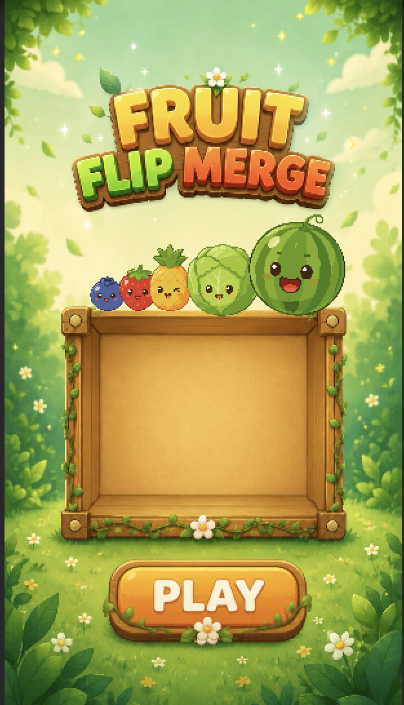
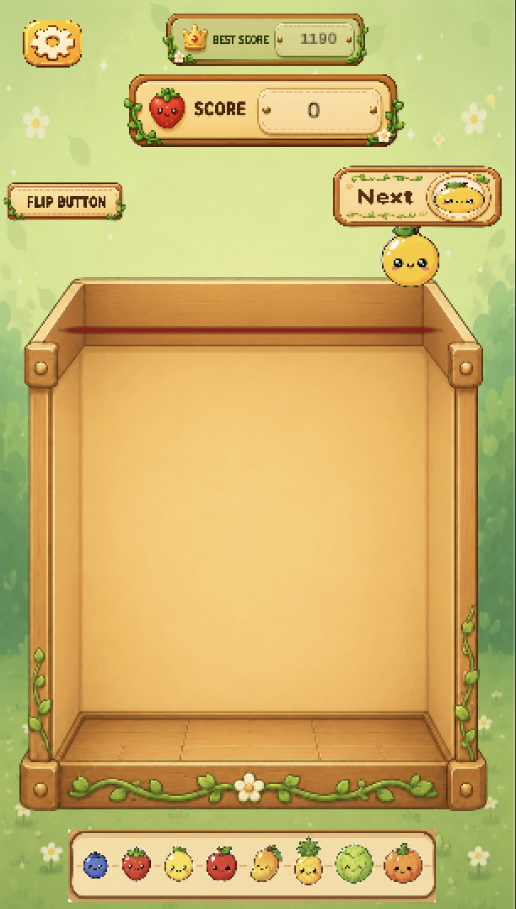
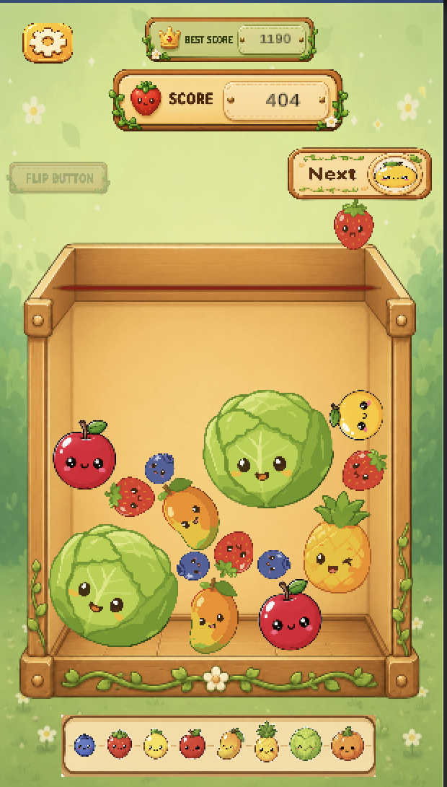

UNITY GAME
Fruit Flip Merge
A casual merge game developed with Unity, featuring a unique one-time Flip mechanic that allows players to reverse the positions of all fruits during gameplay, adding a strategic twist to the classic merge experience.
UNITY GAME
A casual merge game developed with Unity, featuring a unique one-time Flip mechanic that allows players to reverse the positions of all fruits during gameplay, adding a strategic twist to the classic merge experience.
GAME OVERVIEW
Drop fruits into the box and merge matching fruits to create larger ones while earning points.
Use the Flip button once per game to instantly reverse the positions of every fruit, creating new merge opportunities.
Built with Unity 2D physics, giving every fruit realistic movement and collisions for dynamic gameplay.
GALLERY


